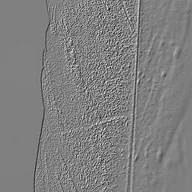

Relief

Applique un effet de relief selon les dégradés de luminance et un angle de lumière défini.
Réglages
| Réglage | Type | Plage | Par défaut |
|---|---|---|---|
| Angle de la lumière | Nombre | De 0 à 360 | 45 |
| Intensité | Nombre | De 0 à 4 | 1 |

Applique un effet de relief selon les dégradés de luminance et un angle de lumière défini.
| Réglage | Type | Plage | Par défaut |
|---|---|---|---|
| Angle de la lumière | Nombre | De 0 à 360 | 45 |
| Intensité | Nombre | De 0 à 4 | 1 |